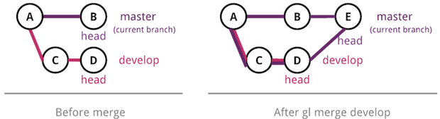
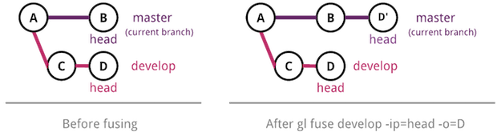

About
Gitless is a version control system built on top of Git.
Many people complain that Git is hard to use. We think the problem lies
deeper than the user interface, in the concepts underlying Git. Gitless
is an experiment to see what happens if you put a simple veneer on an app
that changes the underlying concepts. Because Gitless is implemented on
top of Git (could be considered what Git pros call a "porcelain" of Git),
you can always fall back on Git. And of course your coworkers you share a
repo with need never know that you're not a Git aficionado.
Check out the documentation to get started.
If you are new to version control, the
documentation should be enough to get you started. If you are a Git pro
looking to see what's different from your beloved Git you'll be able to
spot the differences by glancing through the
Gitless vs. Git section.
If you are
interested in software design and want to learn more about the research
behind Gitless see the
research section.
Documentation
Interface
-
gl init
- create an empty repo or create one from an existing remote
repo
-
gl status
- show status of the repo
-
gl track
- start tracking changes to files
-
gl untrack
- stop tracking changes to files
-
gl diff
- show changes to files
-
gl commit
- record changes in the local repo
-
gl checkout
- checkout committed versions of files
-
gl history
- show commit history
-
gl branch
- list, create, edit or delete branches
-
gl switch
- switch branches
-
gl tag
- list, create, or delete tags
-
gl merge
- merge the divergent changes of one branch onto another
-
gl fuse
- fuse the divergent changes of one branch onto another
-
gl resolve
- mark files with conflicts as resolved
-
gl publish
- publish commits upstream
-
gl remote
- list, create, edit or delete remotes
Guide
Contents:
Creating a Repository,
Saving Changes,
Branching,
Tagging,
Working with Remote Repositories.
Creating a Repository
Say you are in directory foo and you want turn it into a
repository. You do this with the
gl init command. This transforms
the current working directory into an empty repository and you
are now ready to start saving changes to files in foo:
$ mkdir foo
$ cd foo/
$ gl init
✔ Local repo created in /MyFiles/foo
In most cases there's already some existing repository you
want to work on instead of starting with an empty repository. To make a
local clone of a remote repository you can give the URL of the repository
as input to the same gl init command:
$ mkdir experiment
$ cd experiment/
$ gl init https://github.com/spderosso/experiment
✔ Local repo created in /MyFiles/experiment
✔ Initialized from remote https://github.com/spderosso/experiment
Saving Changes
Now that you have your local repository, it's time to start saving
changes to files. A file in Gitless can be tracked,
untracked or ignored.
A tracked file is a file whose changes Gitless will detect.
Tracked files are automatically considered for commit if they are
modified and appear listed under the "Tracked files with modifications"
section of status.
Conversely, an untracked file is a file whose changes Gitless
will not detect. These are not automatically considered for commit and
appear listed under the "Untracked files" section of
status.
Finally, an ignored file is a file that is completely ignored by
Gitless and it won't even appear in the output of status.
An example output of the gl status
command
(foo.py and bar.py are tracked files
with modifications, .gitignore is an unmodified tracked file,
baz.py is an untracked file and foo.pyc is an
ignored file):
$ ls
bar.py baz.py foo.py foo.pyc .gitignore
$ gl status
On branch master, repo-directory //
Tracked files with modifications:
➜ these will be automatically considered for commit
➜ use gl untrack <f> if you don't want to track changes to file f
➜ if file f was committed before, use gl checkout <f> to discard local changes
foo.py
bar.py
Untracked files:
➜ these won't be considered for commit)
➜ use gl track <f> if you want to track changes to file f
baz.py
Now, how do files move between these three different disjoint
states?
A file is ignored if it's matched by the ignore specification described in
a .gitignore file.
In the example above,
there is a .gitignore file whose content is '*.pyc'; since
foo.pyc is matched by that pattern it's therefore an
ignored file.
A new file that is not matched by the ignore spec is initially an untracked
file. If you want to track it you can do so with the
gl track command. You can stop tracking
changes to a tracked file
with the gl untrack command.
You can always revert a file back to some previous version with the
gl checkout command.
$ gl track baz.py
✔ File baz.py is now a tracked file
$ gl track baz.py
✘ File baz.py is already a tracked file
$ gl untrack baz.py
✔ File baz.py is now an untracked file
$ gl checkout foo.py
You have uncommitted changes in foo.py that would be
overwritten by checkout. Do you wish to continue? (y/N)
> y
✔ File foo.py checked out successfully to its state at HEAD
To save changes to files you use
gl commit.
By default, all tracked modified files are considered
for commit, but the set of files to commit can be customized with the
o/only, e/exclude, and i/include
flags:
$ gl commit -m "foo and bar"
$ gl commit -m "only foo" -o foo.py
$ gl commit -m "only foo and baz" -o foo.py baz.py
$ gl commit -m "only foo" -e bar.py
$ gl commit -m "only foo and baz" -e bar.py -i baz.py
$ gl commit -m "foo, bar and baz" -i baz.py
There's also a p/partial flag that allows you to
interactively select segments of files to commit.
The gl diff command can be used to see the
difference between the working and committed versions of files. Like
commit, the default set of files to diff is
the set of all tracked modified files but it can be customized with the
o/only, e/exclude, and i/include
flags.
To remove files simply do it like you would in
your operating system (e.g., using Unix's rm command). Gitless
will detect the change if the file was tracked, and it will appear as removed
in status. Gitless currently doesn't detect renames. If you rename a file,
Gitless will interpret this as a file with the old name being removed and a new one
(with the new name and content) being created. If you want the renamed file to be tracked
again you need to track it with gl track.
Branching
A branch is an independent line of development. You are always working
on some branch. Each branch has its own history (which you can look at
with the gl history command). Any changes to
existing files or new files you create on a branch will not be present on
the other branch when you switch branches.
To create a new branch you use the
gl branch
command. To switch to another branch you use the
gl switch command:
$ gl branch -c develop
✔ Created new branch develop
$ gl switch develop
✔ Switched to branch develop
To list all branches:
$ gl branch
List of branches:
➜ do gl branch <b> to create branch b
➜ do gl branch -d <b> to delete branch b
➜ do gl switch <b> to switch to branch b
➜ * = current branch
* master
develop
Each branch has a head, which is the last commit done on the branch.
By default, the head of a new branch is going to be equal to the
head of the current branch. If you want a different commit to be the
head of the new branch you can provide one with the
dp/divergent-point flag.
To specify a commit you can use its id, or you can specify it via an ancestry
reference with ~: HEAD~n refers to
the nth commit before head.
To change the head of the current branch you use the sh/set-head flag.
The sh flag is useful to, for example, amend the last commit:
to do so, run gl branch -sh HEAD~1.
Changing the head of the current branch won't touch your working directory, if you
additionally want to reset your working directory to match the new head
you use gl checkout.
Eventually branches will end up having divergent
changes. There are two ways to bring changes from one branch onto the
current branch: merge and fuse.
Merging branches.
For merging the changes in develop onto the current branch
you do gl merge develop. This creates
a new merge commit that includes the changes in develop in
addition to those changes in the current branch:

Fusing branches. Fusing branches gives you more control than
merging. When you fuse changes from some branch onto the
current branch you can specify the commits to fuse and the insertion
point. By default, all divergent commits are fused and the insertion
point is the divergent point (the point where the source branch diverged
from the current).
For example, the following figure depicts a situation in which there are
two branches: master (the current branch) and
develop. The last commit these two branches have in common is
A. This commit is the "divergent point" (because
it is the point at which master and develop
diverged).
After doing gl fuse develop, the commits
in develop are inserted in master after the
divergent point:
To choose other insertion points you use the
ip/insertion-point flag. You can give a commit id as input,
head or dp/divergent-point:
The o/only and e/exclude flags can be used to
customize the set of commits to be fused:

During this process conflicts could occur. If so, the gl status command will change
accordingly to indicate the files in conflict. Once you edit those files in
conflict you mark them as resolved with
gl resolve (passing the files to mark as input). Once all
conflicts have been resolved
you do gl commit to commit to continue with the fuse or
merge.
A branch can have an "upstream branch." If a branch has an upstream
associated with it, then gl fuse or gl merge can
be used as shorthands for gl {fuse, merge} upstream_branch.
To set an upstream branch for the current branch use
gl branch -su upstream_branch.
Tagging
You use tags to signify a commit is special in some way. For example, you
can use gl tag to create a tag with name
"v1.0" and make it point to the commit that represents release v1.0:
$ gl tag -c v1.0
✔ Created new tag v1.0
In this case, the tag will point to the head of the current branch, but
you can tag other commits with the ci/commit flag.
To list all tags:
$ gl tag
List of tags:
➜ do gl tag <t> to create tag t
➜ do gl tag -d <t> to delete tag t
v1.0 ➜ tags 311bf7c Ready to release
Working with Remote Repositories
To refer to a remote repository you could always use its URL, but an
easier alternative is to add the repository as a "remote" with the
gl remote command:
$ gl remote -c experiment https://github.com/spderosso/experiment
✔ Remote experiment mapping to https://github.com/spderosso/experiment created
successfully
➜ to list existing remotes do gl remote
➜ to remove experiment do gl remote -d experiment
Now you can use experiment to refer to this remote repository
and use experiment/some-branch to refer to the branch of name
some-branch that lives in experiment.
Downloading Changes.
It is also possible to fuse or merge changes from remote
branches. For example, doing gl merge experiment/master
would merge changes in that remote branch that are not present in your
local current branch. You can also use gl fuse.
Uploading Changes.
To send changes upstream you use
gl publish. The publish command will
default to updating the upstream branch of the current branch if none is
given as input.
Creating, Deleting, or Listing Remote Branches.
To create, delete, or list remote branches you use the same gl branch
command that you use for local branches. If you do
gl branch -c experiment/develop this will create a branch
develop that lives in the remote experiment.
Recall that, by default, the head of this new branch will be equal to the head of
the current branch, so all commits that are not present in the remote
will be uploaded. To list remote branches use the
r/remote flag of gl branch.
Creating, Deleting, or Listing Remote Tags.
To create or delete remote tags you use the gl tag command.
If you do
gl tag -c experiment/v1.0 this will create a new tag
v1.0 that lives in the remote experiment. You can also list
remote tags with the r/remote flag of gl tag.
When you create a local repository from a remote (by passing a URL as
input to the gl init command), a local branch is created
for each remote branch, and each local branch is automatically configured
to have as upstream its remote counterpart.
Gitless vs. Git
Saving Changes
There's no staging area in Gitless. This, coupled with a flexible
commit command makes saving changes to the repository very
straightforward:
Commit all modified tracked files
$ gl commit
Leave some modified tracked files (`foo`, `bar`)
out of the commit
$ gl commit -e foo bar
Include some untracked files in the commit
$ gl commit -i foo2 bar2
Commit only some of the modified tracked files
$ gl commit -o foo3 bar3
Commit only some of the modified tracked or
untracked files
$ gl commit -o foo3 bar3 foo4
Commit all modified tracked files
$ git commit -a
Leave some modified tracked files (`foo`, `bar`)
out of the commit
$ git add
$ git commit
Include some untracked files in the commit
$ git add foo2 bar2
$ git commit
Commit only some of the modified tracked files
$ git commit foo3 bar3
Commit only some of the modified tracked or
untracked files
$ git commit foo3 bar3 foo4
error: pathspec 'foo4' did not match any file(s)
known to git.
$ git add foo4
$ git commit foo3 bar3 foo4
Also, you can change the classification of any file to tracked,
untracked or ignored, it doesn't matter whether the file exists at head
or not:
$ gl status
...
Tracked files with modifications:
...
foo
...
Stop tracking changes to `foo`
$ gl untrack foo
✔ File foo is now an untracked file
$ gl status
...
Untracked files:
...
foo (exists at head)
...
Start tracking changes to `foo` again
$ gl track foo
✔ File foo is now a tracked file
$ gl status
...
Tracked files with modifications:
...
foo
...
$ git status
...
Changes not staged for commit:
...
modified: foo
...
Stop tracking changes to `foo`
$ git update-index --assume-unchanged foo
$ git status
...
Start tracking changes to `foo` again
$ git update-index --no-assume-unchanged foo
$ git status
...
Changes not staged for commit:
...
modified: foo
...
Branching
The main thing to understand is that in Gitless a branch is a completely
independent line of development. Each branch keeps its working version
of files separate from each other. Whenever you switch to a different
branch, the contents of your working directory are saved, and the ones
corresponding to the branch you are switching to are retrieved. The
classifications of files are also saved (i.e., a file can
be untracked on some branch but tracked on another and Gitless will
remember this):
$ gl status
...
Tracked files with modifications:
...
foo
...
Create new branch `develop`
$ gl branch -c develop
✔ Created new branch develop
Switch to `develop`
$ gl switch develop
✔ Switched to branch develop
$ gl status
Switch back to `master`
$ gl switch master
✔ Switched to branch master
$ gl status
...
Tracked files with modifications:
...
foo
...
$ git status
...
Changes not staged for commit:
...
modified: foo
...
Create new branch `develop`
$ git branch develop
Switch to `develop`
$ git checkout develop
$ git status
...
Changes not staged for commit:
...
modified: foo
...
Switch back to `master`
$ git checkout master
...
Changes not staged for commit:
...
modified: foo
...
This means that in Gitless you don't have to worry about uncommitted
changes conflicting with the changes in the destination branch:
Switch to `develop`
$ gl switch develop
✔ Switched to branch develop
Switch to `develop`
$ git checkout develop
error: Your local changes to the following files
would be overwritten by checkout:
foo
Please, commit your changes or stash them before
you can switch branches.
Aborting
$ git stash
Saved working directory and index state WIP on
master: fbe3b8c ...
HEAD is now at fbe3b8c ...
$ git checkout develop
Switched to branch 'develop'
And if you are in the middle of a fuse/merge and you want to put aside
the conflict resolution for later, you can. The conflict will be there
when you switch back:
$ gl fuse develop
...
✘ There are conflicts you need to resolve
$ gl status
On branch master, repo-directory //
You are in the middle of a fuse; all
conflicts must be resolved before
committing
...
Tracked files with modifications:
...
foo (with conflicts)
...
Switch to `bugfix`
$ gl switch bugfix
✔ Switched to branch bugfix
Switch back to `develop`
$ gl switch develop
✔ Switched to branch develop
$ gl status
On branch master, repo-directory //
You are in the middle of a fuse; all
conflicts must be resolved before
committing
...
Tracked files with modifications:
...
foo (with conflicts)
...
$ git rebase develop
First, rewinding head to replay your work on top of
it...
Applying: this commit should trigger a conflict
Using index info to reconstruct a base tree...
M foo
Falling back to patching base and 3-way merge...
Auto-merging foo
CONFLICT (content): Merge conflict in foo
Failed to merge in the changes.
Patch failed at 0001 foo conflict
The copy of the patch that failed is found in:
...
$ git status
rebase in progress; onto 989269e
You are currently rebasing branch 'master' on
'989269e'.
...
Unmerged paths:
...
both modified: foo
...
Switch to `bugfix`
$ git checkout bugfix
foo: needs merge
error: you need to resolve your current index first
$ git stash
foo: needs merge
foo: needs merge
foo: unmerged (0b3c542edb2e9e8ff801c669d7a5f2d78...)
foo: unmerged (94421333de34e32405f632d0f7b63b39c...)
foo: unmerged (eb97dba229aab53fe5f231e60491dd2a7...)
fatal: git-write-tree: error building trees
Cannot save the current index state
$
$ git rebase --abort
$ git checkout bugfix
Switched to branch 'bugfix'
Switch back to `develop`
$ git checkout develop
$ git status
...
$ git rebase develop
...
$
Working with Remote Repositories
Syncing with other repositories in Gitless works quite similar to
Git:
Configure a new remote `experiment`
$ gl remote -c experiment
https://github.com/spderosso/experiment
✔ Remote experiment mapping to
https://github.com/spderosso/experiment
created successfully
➜ to list existing remotes do gl remote
➜ to remove experiment do gl remote -d experiment
Download and apply changes from a branch in
`experiment`
$ gl fuse experiment/master
...
✔ Fuse succeeded
$ gl branch -su experiment/master
✔ Current branch master set to track
experiment/master
$ gl fuse
! No src branch specified, getting changes from
upstream branch experiment/master
...
✔ Fuse succeeded
Send changes to the remote
$ gl publish
! No src branch specified, sending changes to
upstream branch experiment/master
✔ Publish succeeded
Configure a new remote `experiment`
$ git remote add experiment
https://github.com/spderosso/experiment
Download and apply changes from a branch in
`experiment`
$ git pull experiment/master
...
$ git branch --set-upstream master experiment/master
$ git pull
...
Send changes to the remote
$ git push